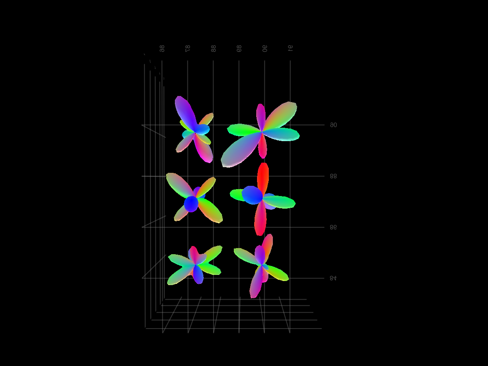
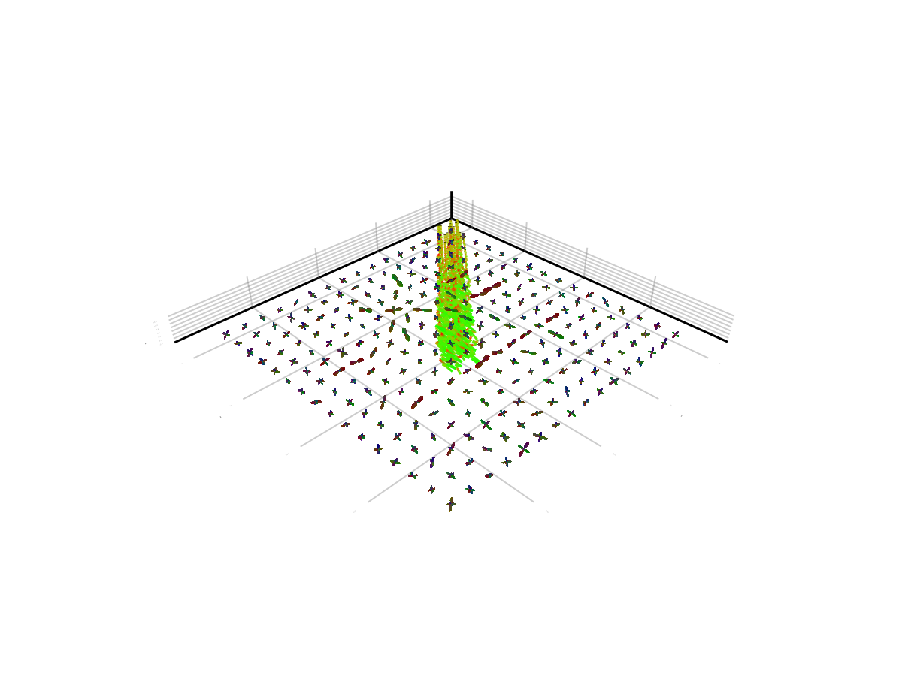

Plotting
Plotting functionality is provided through Makie.jl recipes. By loading one of the Makie backends (CairoMakie, GLMakie, or WGLMakie), you can use custom functions to visualize FOD (Fiber Orientation Distribution) data.
This tutorial uses CairoMakie for static plots, but GLMakie is recommended for interactive 3D visualization.
Setup
Let's start by loading FOD data from a NIfTI file:
using Tractographyconst TG = Tractographymodel = TG.Model(Δt = 0.125f0, foddata = TG.FODData((@__DIR__) * "/../../examples/fod-FC.nii.gz"), cone = TG.Cone(15f0), proba_min = 0.005f0, )Model with eltype Float32
├─ Δt = 0.125
├─ minimal probability = 0.005
├─ cone = Cone{Float32}(15.0f0)
├─ mollifier = max_mollifier
├─ evaluation of the basis = PreComputeAllFOD()
└─ data : (lmax = 8)
Plotting FODFs
To visualize Fiber Orientation Distribution Functions (FODFs), use the plot_fod! function. See the plot_fod! documentation for details on available keyword arguments.
The following example plots FODFs for a specific region of interest:
using CairoMakief, sc = TG.plot_fod(model; n_sphere = 1500, radius = 1., I = 29:31, J = 30:31, K = 2:2);f
Plotting Streamlines
To visualize tractography streamlines, use the plot_streamlines! function. See the plot_streamlines! documentation for details on available keyword arguments.
The following example creates synthetic streamlines and plots them alongside FODFs:
# Generate synthetic streamlines for demonstrationstreamlines = zeros(Float32, 6, 100, 20)for n = 1:20 v0 = rand(3) * 15 # Random starting position for nt = 1:100 # Create curved trajectories streamlines[1:3, nt, n] .= v0 .+ nt .* [1, 1 + 0.1*rand(), 0] endend# Create a combined visualization of streamlines and FODFsf = Figure(backgroundcolor = :white)lscene = LScene(f[1, 1])stl_lengths = fill(size(streamlines, 2), size(streamlines, 3))TG.plot_streamlines!(lscene.scene, streamlines[1:3, 1:1:end, :], stl_lengths)TG.plot_fod!(lscene, model; n_sphere = 1500, radius = 1.3, st = 4)f